La música clásica es un género musical que se extiende a lo largo de varios períodos históricos, desde la música antigua hasta la contemporánea. Cada período tiene características únicas en términos de estilos, formas y expresión artística.
Por ejemplo, el período barroco se caracteriza por su ornamentación elaborada y contrapuntos complejos, mientras que el período romántico se distingue por sus expresiones emocionales y narrativas poderosas.
Los compositores de música clásica han creado una amplia variedad de formas musicales, desde sinfonías y conciertos hasta sonatas y óperas.
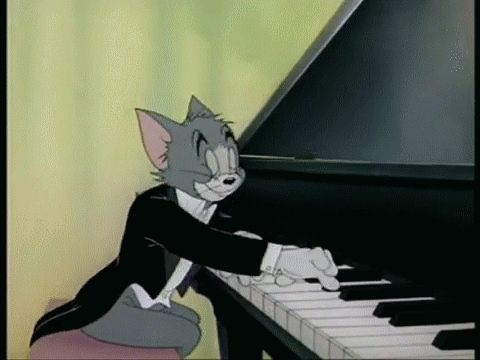
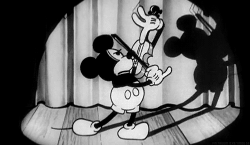
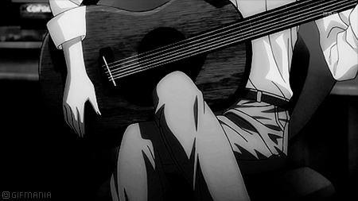
El jazz es un género musical que surgió a finales del siglo XIX y principios del XX en los Estados Unidos, particularmente en la región de Nueva Orleans.
Se desarrolló a partir de una mezcla de influencias musicales, incluyendo la música africana, europea y caribeña, así como el blues y el ragtime.
El jazz se caracteriza por su improvisación, ritmo sincopado y énfasis en la expresión individual. Los músicos de jazz a menudo improvisan sobre una progresión de acordes establecida, creando nuevas melodías y solos en el momento.
Esta improvisación es una de las características más distintivas del jazz y permite una creatividad y libertad únicas en la interpretación musical.
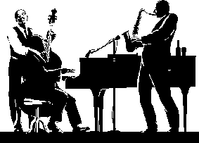
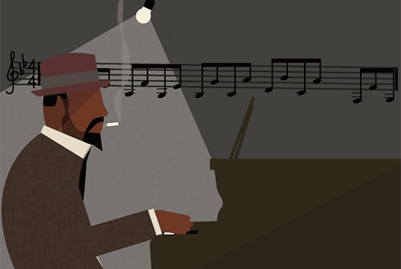

El rock es un género musical que se originó en Estados Unidos a mediados del siglo XX y se convirtió en uno de los estilos musicales más influyentes y populares en todo el mundo.
Se caracteriza por su ritmo potente y enérgico, su énfasis en la guitarra eléctrica y la batería, y sus letras a menudo centradas en temas como el amor, la rebeldía y la libertad.
El rock tiene sus raíces en una variedad de géneros musicales anteriores, incluyendo el blues, el rhythm and blues, el country y el gospel. A lo largo de su evolución, el rock ha generado numerosos subgéneros y estilos, cada uno con su propio sonido y estética distintiva.
Algunos de estos subgéneros incluyen el rock and roll, el rock clásico, el rock psicodélico, el rock progresivo, el hard rock, el punk rock, el heavy metal, el grunge, entre otros.
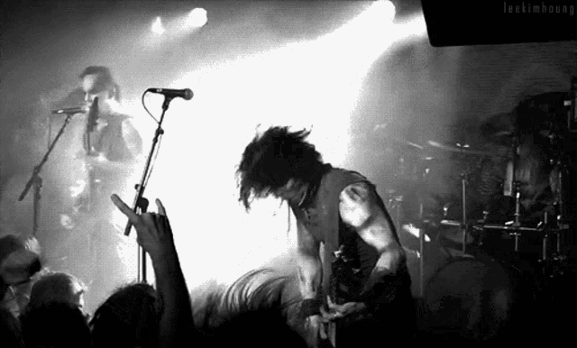
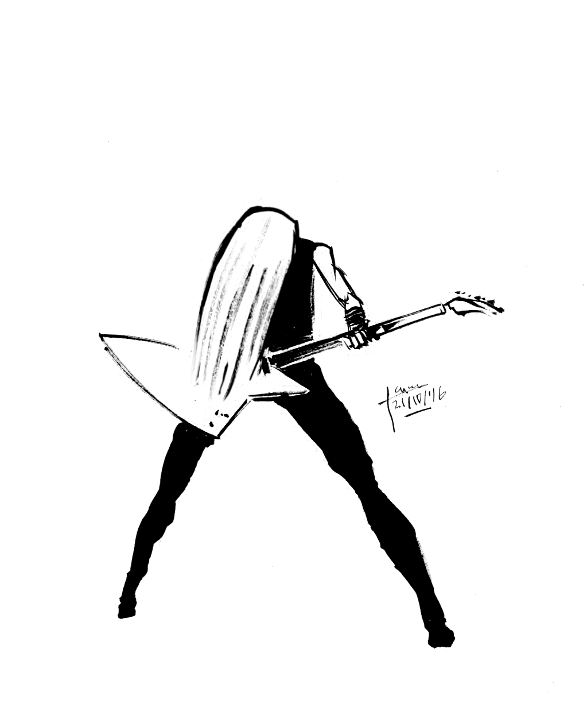
La música electrónica es un género musical que se caracteriza por el uso de instrumentos electrónicos y tecnología de producción para crear sonidos y composiciones musicales.
Se originó a mediados del siglo XX con el desarrollo de la tecnología de grabación y la síntesis de sonido, y ha evolucionado en una amplia variedad de estilos y subgéneros a lo largo del tiempo.
Una de las características más distintivas de la música electrónica es su enfoque en el sonido y la textura, así como su capacidad para crear paisajes sonoros y atmósferas inmersivas.
Los músicos y productores de música electrónica utilizan una variedad de equipos y software, como sintetizadores, cajas de ritmos, samplers y secuenciadores, para crear y manipular sonidos de manera creativa.
El hip hop es un género musical y cultural que se originó en la década de 1970 en las comunidades afroamericanas y latinas en el Bronx, Nueva York.
Se caracteriza por sus cuatro elementos fundamentales: el rap (la expresión vocal rítmica y poética), el DJing (la manipulación de grabaciones de música), el breakdance (el baile urbano) y el graffiti (el arte callejero). Con el tiempo, el hip hop se ha expandido para incluir otros elementos como la moda, el lenguaje y el activismo social.
El rap es uno de los componentes más reconocibles del hip hop y consiste en la entrega rítmica de rimas y versos sobre un ritmo musical, a menudo acompañado por un beat de percusión.
Las letras del rap pueden abordar una variedad de temas, incluyendo la vida en los barrios urbanos, la lucha contra la discriminación racial, la crítica social y la autoexpresión personal.
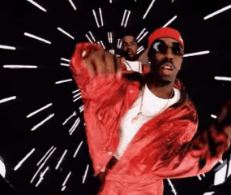
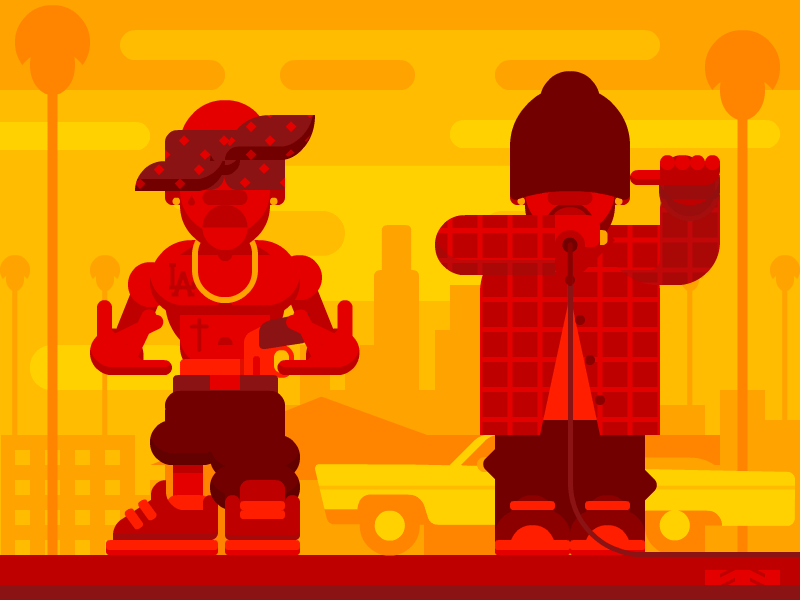
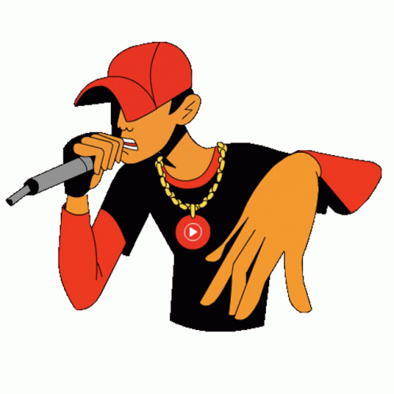
La bachata es un género musical y un estilo de baile que se originó en la República Dominicana en la década de 1960.
Es conocida por sus letras melódicas y a menudo románticas, así como por su ritmo característico y su estilo de guitarra distintivo.
La bachata tiene sus raíces en la música tradicional dominicana, especialmente en el bolero, el son cubano y el merengue.
Originalmente, era considerada música de las clases trabajadoras y marginadas de la sociedad dominicana, pero con el tiempo ha ganado popularidad tanto a nivel nacional como internacional.
La instrumentación típica de la bachata incluye la guitarra eléctrica, el bajo, la guitarra española y la güira (un instrumento de percusión).
El ritmo de la bachata es característicamente sensual y cadencioso, con un patrón rítmico distintivo que se repite a lo largo de la canción.
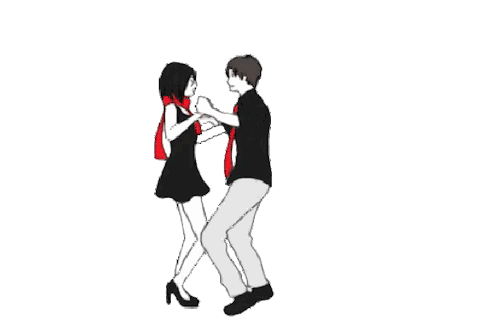